Dear Budweiser Team,
The purpose of this analytics study is to determine the relationship of ABV and IBU between your different types of beers (primarily IPAs and Ales). In this study I will explain how ABV and IBU are distributed between your IPAs and Ales, prove to you that IPAs and Ales have significantly different ABV and IBU ratings, as well as recommend to you an ABV range for future IPAs and Ales you produce which your customers should be satisfied with.
Importing Libraries
library(dplyr) #join etc
library(naniar) # check nulls
library(mice) # imputing
library(VIM) # view imputed datas
library(stringi)
library(stringr)
library(rvest) #html_table, html_node
library(purrr)
library(tidyverse) # Data cleaning
library(tidyr) # Data cleaning
library(ggthemes) #Plotting
library(plotly) #Plotting
library(ggplot2) #Plotting
library(reshape2) # melt
library(GGally) # ggpairs
library(caret) #Confution matrix
library(class)
library(caret)
library(e1071)#Read supplied data
cdw = getwd()
brewwriesData = read.csv("/Users/angelobravo/Downloads/MDS-6306-Doing-Data-Science-Fall-2019-master-4/Unit 8 and 9 Case Study 1/Breweries.csv", header = TRUE)
beerData = read.csv("/Users/angelobravo/Downloads/MDS-6306-Doing-Data-Science-Fall-2019-master-4/Unit 8 and 9 Case Study 1/Beers.csv",header = TRUE)
# about 58.3% of data are not missing any values
# 40% of IBU and 2.6% of ABV are misisng values
aggr_plot <- aggr(beerData, col=c('navyblue','red'), numbers=TRUE, sortVars=TRUE,
labels=names(beerData), cex.axis=.7, gap=3,
ylab=c("Histogram of Missing Data","Pattern"))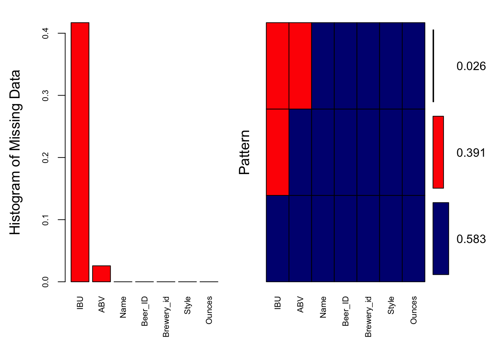
##
## Variables sorted by number of missings:
## Variable Count
## IBU 0.41701245
## ABV 0.02572614
## Name 0.00000000
## Beer_ID 0.00000000
## Brewery_id 0.00000000
## Style 0.00000000
## Ounces 0.00000000# left box plot to distribution of AVB with and without misisng IBU
#Right shows there are no IBU observations where ABV is missing
marginplot(beerData[c('IBU','ABV')])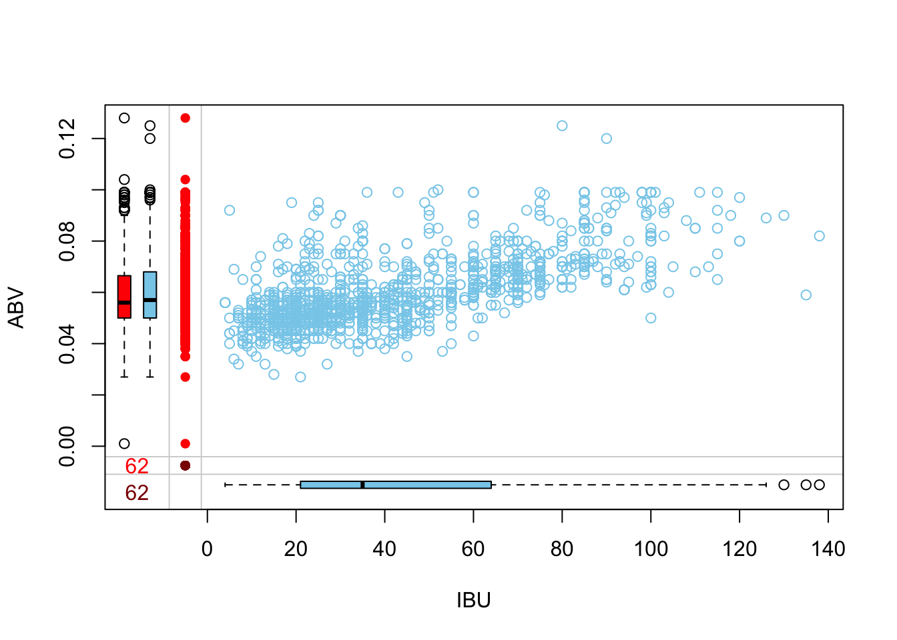
# Deal with missing values
#t = beerData %>% head(100)
# We will get all missing vars to build the predictorMatrix to be passed to mice
missVars <- names(beerData)[colSums(is.na(beerData)) > 0]
#Get all the variables names in the dataset
allVars <- names(beerData)
#Code borrwoed from https://rpubs.com/kaz_yos/mice-exclude
#Initialize the matrix witl all row column having th evar names form above
predictorMatrix <- matrix(0, ncol = length(allVars), nrow = length(allVars))
rownames(predictorMatrix) <- allVars
colnames(predictorMatrix) <- allVars
#List the variables we want to be used for the calculations
imputerVars <- c("ABV","IBU","Style")
## Keep variables that actually exist in dataset
imputerVars <- intersect(unique(imputerVars), allVars)
imputerMatrix <- predictorMatrix
imputerMatrix[,imputerVars] <- 1
#Specify variables to be imputed
imputedOnlyVars <- c("ABV","IBU")
imputedVars <- intersect(unique(c(imputedOnlyVars, imputerVars)), missVars)
imputedMatrix <- predictorMatrix
imputedMatrix[imputedVars,] <- 1
predictorMatrix <- imputerMatrix * imputedMatrix
## Diagonals must be zeros (a variable cannot impute itself)
diag(predictorMatrix) <- 0#Generate 5 sets using 50 iterations using pnm (Predictive mean matching) method
imputedBeer = mice(beerData,m=5,maxit=50,meth='pmm',seed=500, predictorMatrix = predictorMatrix)## Warning: Number of logged events: 250Visualizng Imputed Dataset
densityplot(imputedBeer,IBU~ABV|.imp)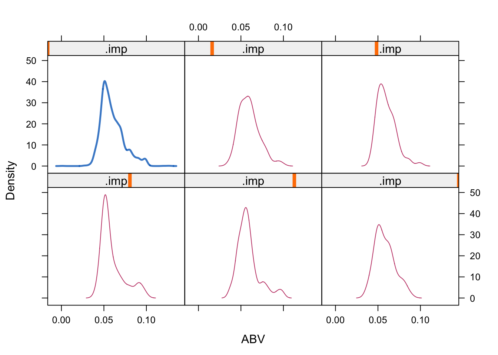
completedData = mice::complete(imputedBeer,4)
xyplot(beerData$ABV ~ beerData$IBU,data = beerData, main = "Data with Missing Values")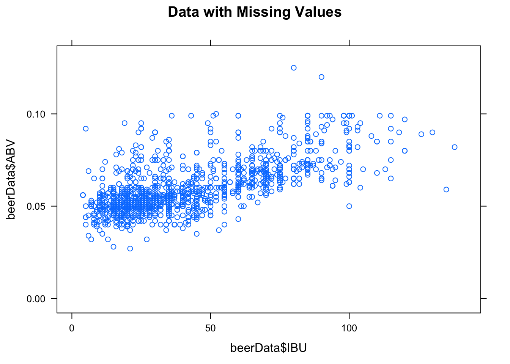
xyplot(imputedBeer,ABV ~ IBU, main = "Data After Filling in Missing Values")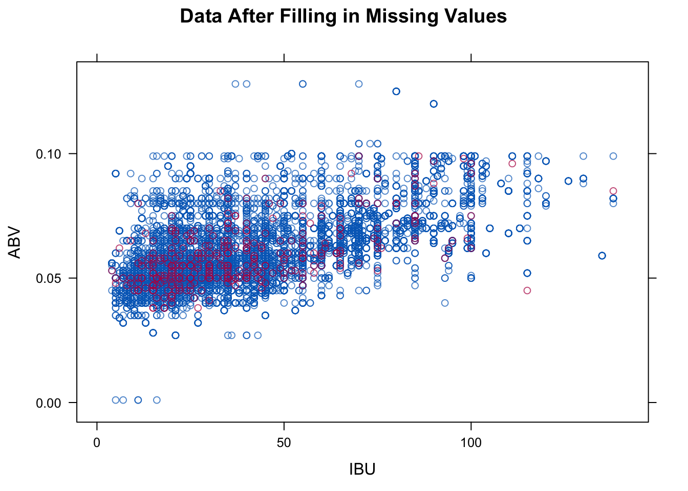
brewwriesData %>% count(State)beerBrewries = merge(completedData, brewwriesData, by.x = "Brewery_id", by.y = "Brew_ID")
head(beerBrewries,6)tail(beerBrewries,6)abByState = beerBrewries %>% group_by(State) %>%
summarize(medianIBU = median(IBU), medianABV = median(ABV))
abByState = abByState %>% mutate(Bitterness = 'Middle')
abByState[which.max(abByState$medianIBU),]$Bitterness = "Max"
abByState[which.min(abByState$medianIBU),]$Bitterness = "Min"
abByState = abByState %>% mutate(Alcohol = 'Middle')
abByState[which.max(abByState$medianABV),]$Alcohol = "Max"
abByState[which.min(abByState$medianABV),]$Alcohol = "Min"
#Comparision bar chart per state
p = ggplot(abByState,aes(x = State,y = medianIBU)) +
geom_bar(aes(fill = Bitterness),stat = "identity") +
labs(title="Median Bitterness by State", y = "IBU", x="State" ) +
theme(axis.text.x = element_text(angle = 90, hjust = 1))
p + theme(legend.position = "top")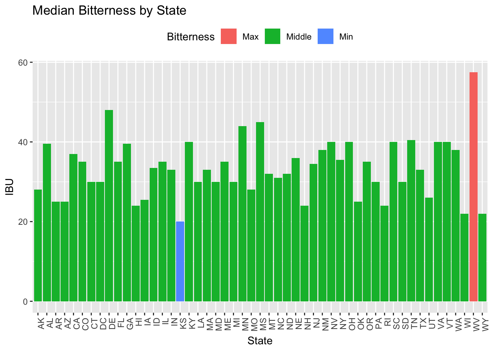
p =ggplot(abByState,aes(x = State,y = medianABV*100)) +
geom_bar(aes(fill = Alcohol),stat = "identity") +
labs(title="Median ABV by State", y = "ABV %", x="State" ) +
theme(axis.text.x = element_text(angle = 90, hjust = 1))
p + theme(legend.position = "top")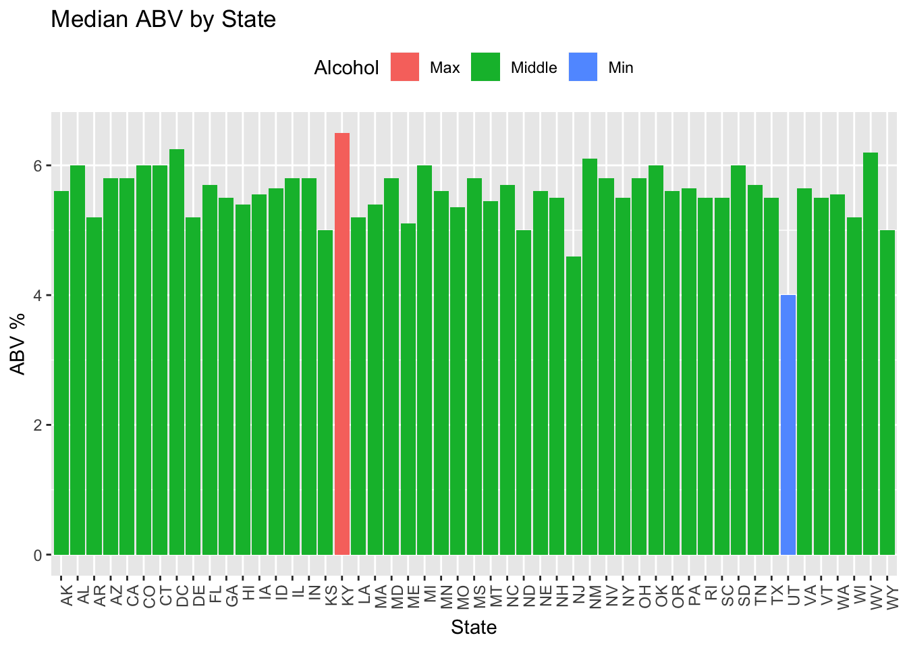
#Identify beer Categories by Lager//Ale/Other
beerBrewries = beerBrewries %>% mutate(bClass = 'Other')
beerBrewries = beerBrewries %>% mutate(ABVpercent = ABV*100)
beerBrewries[grepl('IPA',beerBrewries$Style, ignore.case = TRUE),]$bClass = "IPA"
beerBrewries[grepl('Ale',beerBrewries$Style, ignore.case = TRUE),]$bClass = "Ale"
#beerBrewries[grepl('lager',beerBrewries$Style, ignore.case = TRUE),]$bClass = "Lager"#State with max ABV
beerBrewries$State[which.max(beerBrewries$ABV)]## [1] CO
## 51 Levels: AK AL AR AZ CA CO CT DC DE FL GA HI IA ID ... WY#State with max IBU
beerBrewries$State[which.max(beerBrewries$IBU)]## [1] OR
## 51 Levels: AK AL AR AZ CA CO CT DC DE FL GA HI IA ID ... WYbeerBrewries = beerBrewries %>% mutate(bClass = as.factor(bClass))
summary(beerBrewries$ABVpercent)## Min. 1st Qu. Median Mean 3rd Qu. Max.
## 0.100 5.000 5.600 5.974 6.700 12.800beerBrewries %>% ggplot(aes(x = bClass, y = ABVpercent)) +
geom_boxplot() +
labs(title="ABV % distribution by beer category", y = "ABV %", x="Beer Category" ) 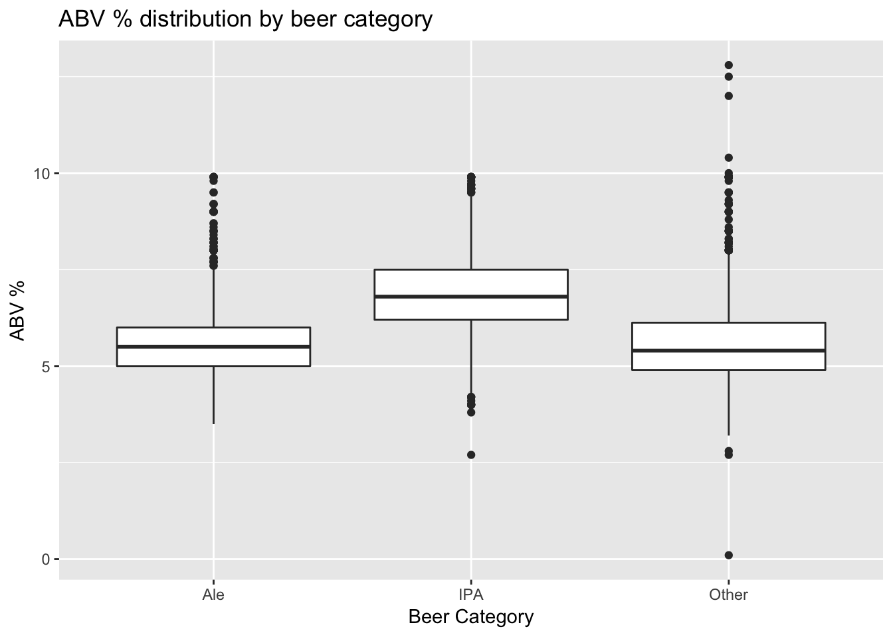
beerBrewries %>%
ggplot(aes(x = log(ABVpercent), color = bClass)) +
geom_histogram() + facet_grid(rows = vars(bClass)) +
labs(title="ABV % distribution by beer category", y = "Count", x="ABV(%)" ) +
theme_classic()## `stat_bin()` using `bins = 30`. Pick better value with `binwidth`.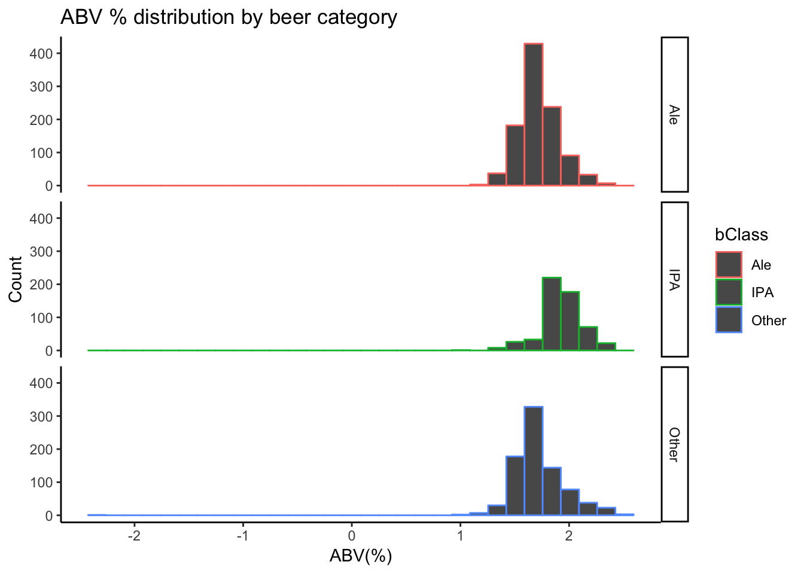
beerBrewries %>%
ggplot(aes(x = IBU, y = ABV)) + geom_point(color = "blue") +
labs(title="IBU vs. ABV", y = "ABV", x="IBU" ) +
geom_smooth(method = "lm", color = "black") +
theme_classic()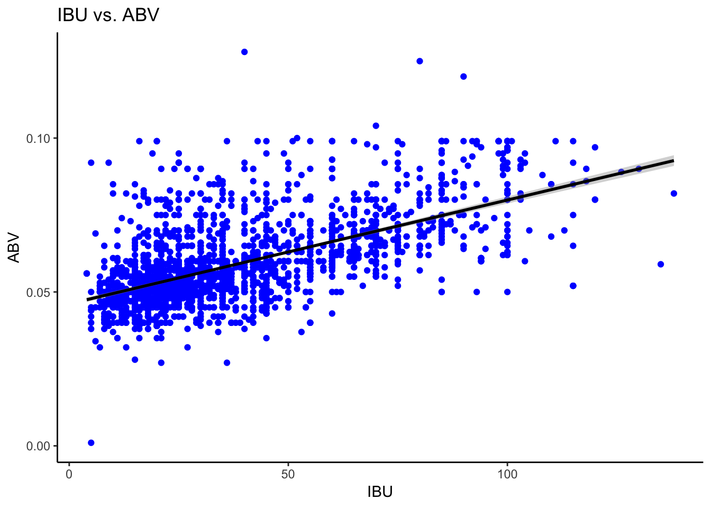
beerBrewries %>% select( IBU, ABVpercent,bClass) %>% ggpairs(aes(color = bClass))## `stat_bin()` using `bins = 30`. Pick better value with `binwidth`.
## `stat_bin()` using `bins = 30`. Pick better value with `binwidth`.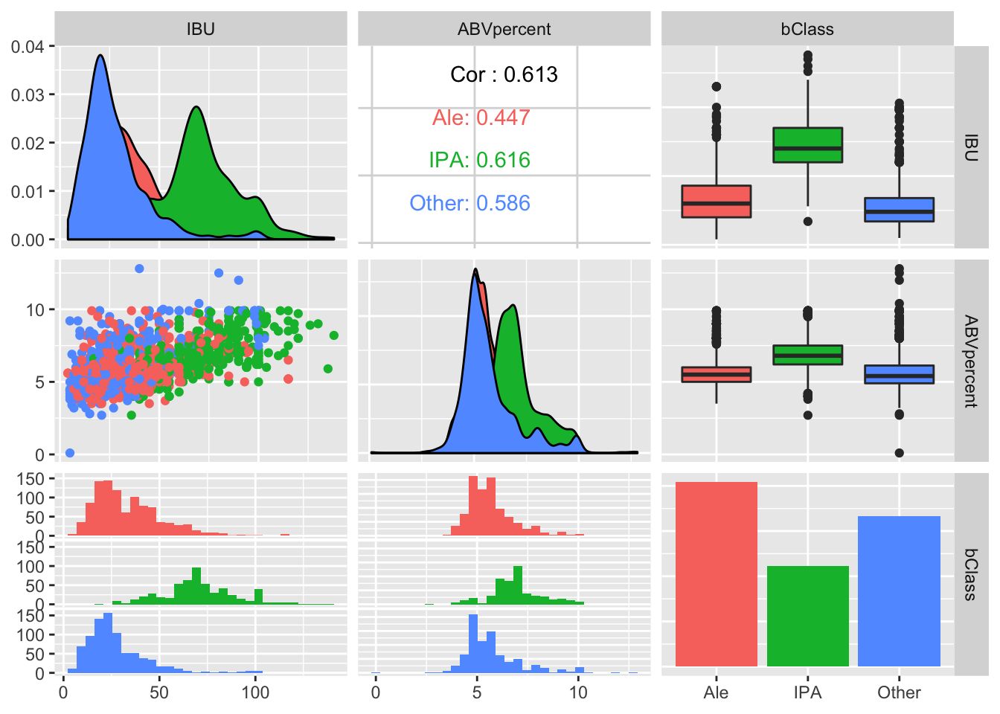
Preparing dataset for KNN Creating IPA/Ale only dataframe
ipa_ale_df <- beerBrewries %>% filter(bClass %in% c("IPA", "Ale"))
ipa_df <- beerBrewries %>% filter(bClass %in% c("IPA"))
ale_df <- beerBrewries %>% filter(bClass %in% c("Ale"))
ipa_ale_df$bClass <- droplevels(ipa_ale_df$bClass)
ipa_ale_df$bClass <- factor(ipa_ale_df$bClass, levels = c("IPA", "Ale"))
#removing ale,other levels
ipa_df$bClass <- droplevels(ipa_df$bClass)
#adding ale level to ipa_df
ipa_df$bClass <- factor(ipa_df$bClass,
levels = c(levels(ipa_df$bClass), "Ale"))
#same process to ale_df
ale_df$bClass <- droplevels(ale_df$bClass)
#adding ale level to ipa_df
ale_df$bClass <- factor(ale_df$bClass,
levels = c(levels(ale_df$bClass), "IPA"))In order to demonstrate that ABV and IBU values are significantly different from each other between Ales and IPAs, we wanted to show that we can attain a predictive accuracy greater than 50% (random guess) when classifying only between IPAs and Ales. We did this by: Gathering a subset of the data which only contained IPA or ALE as a factor. Performing 100 iterations of 50/50 Ale/IPA splits for the train data, and running KNN on each iteration for 100 Ks using only IPAs and Ales in our test set.
Results: Our maximum accuracy was 93.3% with K=11, with a sensitity of 93.3% and specificity 94.3%. Our accuracies from all models range from 74.0% (k = 1) to 94.0% (k = 11). Our overall best performing average K for 100 iterations was K = 61, with a mean accuracy of 84.9%, mean sensitivity of 83.6%, and mean specificity 85.3%. All of our predictive accuracy results for 10,000 models fitted were significantly greater than 50%, showing that there is a significant distinction in ABV and IBU between Ales and IPAs.
#IPA,ALE VS IPA,ALE (50/50 split)
set.seed(100)
n = 1
accuracydf <- data.frame(accuracy = numeric(10000), k = numeric(10000),
sensitivity = numeric(10000), specificity = numeric(10000))
for(i in 1:100) {
#Get dataset with evenly distributed IPAs and Ales (50/50)
ipa_test_ind <- sample(1:nrow(ipa_df), nrow(ipa_df)-250)
ale_df_ind <- sample(1:nrow(ale_df), 250)
#building train set
ipa_ale_train <- rbind(ipa_df[-ipa_test_ind,], ale_df[ale_df_ind,])
ipa_ale_overall_test <- ipa_ale_df[sapply(ipa_ale_df$Name.x,
function(x) x %in% ipa_ale_train$Name.x) == FALSE,]
ipa_ale_test_ind <- sample(1:nrow(ipa_ale_overall_test),
round(.2 * nrow(ipa_ale_train)))
ipa_ale_test <- ipa_ale_overall_test[ipa_ale_test_ind,]
#storing accuracy data in data frame
for(j in 1:100) {
classifications <- knn(ipa_ale_train[c("ABV", "IBU")],
ipa_ale_test[c("ABV", "IBU")],
cl = ipa_ale_train$bClass, k = j, prob = F)
CM = confusionMatrix(table(classifications, ipa_ale_test$bClass))
accuracydf$accuracy[n] = CM$overall[1]
accuracydf$sensitivity[n] = CM$byClass["Sensitivity"]
accuracydf$specificity[n] = CM$byClass["Specificity"]
accuracydf$k[n] = j
n = n + 1
}
}
#grabbing lowest accuracy and respective k
accuracydf[which.min(accuracydf$accuracy), ]#grabbing highest accuracy and respective k
accuracydf[which.max(accuracydf$accuracy), ]summary_acc_df <- accuracydf %>% group_by(k) %>%
summarise(mean_accuracy = mean(accuracy),
mean_sensitivity = mean(sensitivity),
mean_specificity = mean(specificity, na.rm = T))
#overall_mean_accuracy
overall_mean_accuracy <- summary_acc_df[which.max(summary_acc_df$mean_accuracy),]
acc_df <- as.data.frame(summary_acc_df)
#Grabbing maximum average mean accuracy and respective k
overall_mean_accuracylibrary(ggthemes)
acc_df %>% ggplot(aes(x = k, y = mean_accuracy)) + geom_point() +
geom_smooth() + theme_economist() +
ggtitle("Mean Accuracy For 100 Iterations vs. K") +
xlab("K") + ylab("Mean Accuracy")## `geom_smooth()` using method = 'loess' and formula 'y ~ x'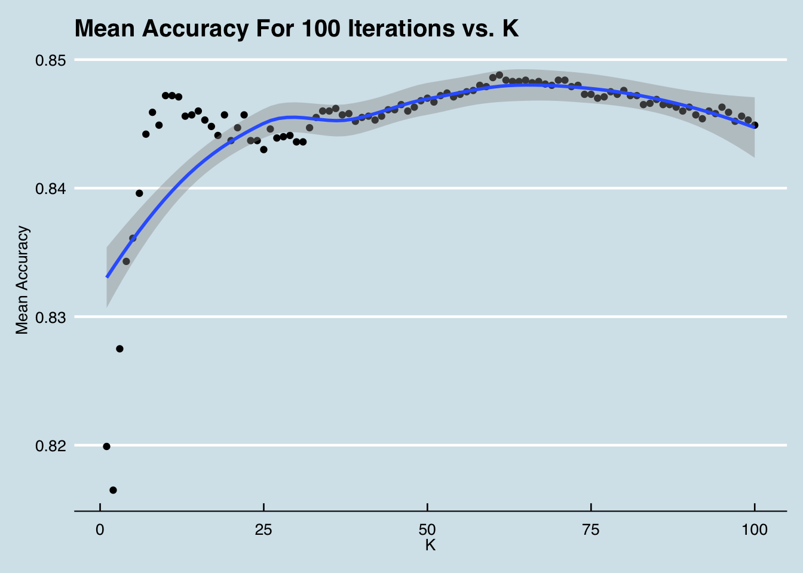
#ABV Distribution of Ales and IPAs
hist(ipa_ale_df$ABV[ipa_ale_df$bClass=="IPA"], col=rgb(1,0,0,0.5),
xlim = range(.01,.15), main="Ale and IPA ABV Histogram",
xlab = "ABV", ylab = "Count")
hist(ipa_ale_df$ABV[ipa_ale_df$bClass=="Ale"], col=rgb(0,0,1,0.5), add=T)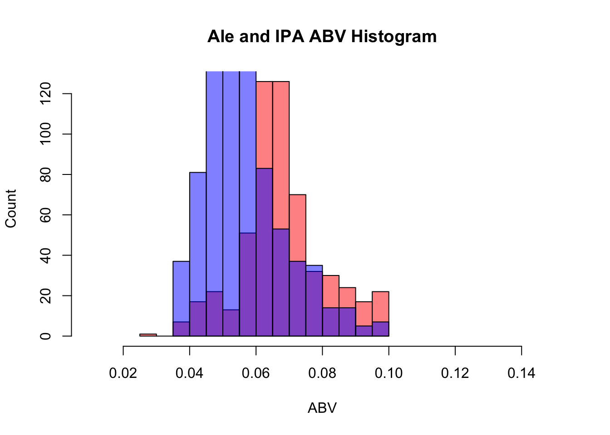
#run a two-sample to test if the groups have significantly different ABVs
t.test(ipa_ale_df$ABV[ipa_ale_df$bClass=="IPA"], ipa_ale_df$ABV[ipa_ale_df$bClass=="Ale"])##
## Welch Two Sample t-test
##
## data: ipa_ale_df$ABV[ipa_ale_df$bClass == "IPA"] and ipa_ale_df$ABV[ipa_ale_df$bClass == "Ale"]
## t = 19.513, df = 1034.3, p-value < 2.2e-16
## alternative hypothesis: true difference in means is not equal to 0
## 95 percent confidence interval:
## 0.01114313 0.01363483
## sample estimates:
## mean of x mean of y
## 0.06902330 0.05663431#run a ttest on each group in order to determine a 95% CI of abv for each group
t.test(ipa_ale_df$ABV[ipa_ale_df$bClass=="IPA"])##
## One Sample t-test
##
## data: ipa_ale_df$ABV[ipa_ale_df$bClass == "IPA"]
## t = 130, df = 557, p-value < 2.2e-16
## alternative hypothesis: true mean is not equal to 0
## 95 percent confidence interval:
## 0.06798038 0.07006622
## sample estimates:
## mean of x
## 0.0690233t.test(ipa_ale_df$ABV[ipa_ale_df$bClass=="Ale"])##
## One Sample t-test
##
## data: ipa_ale_df$ABV[ipa_ale_df$bClass == "Ale"]
## t = 162.68, df = 1019, p-value < 2.2e-16
## alternative hypothesis: true mean is not equal to 0
## 95 percent confidence interval:
## 0.05595119 0.05731744
## sample estimates:
## mean of x
## 0.05663431